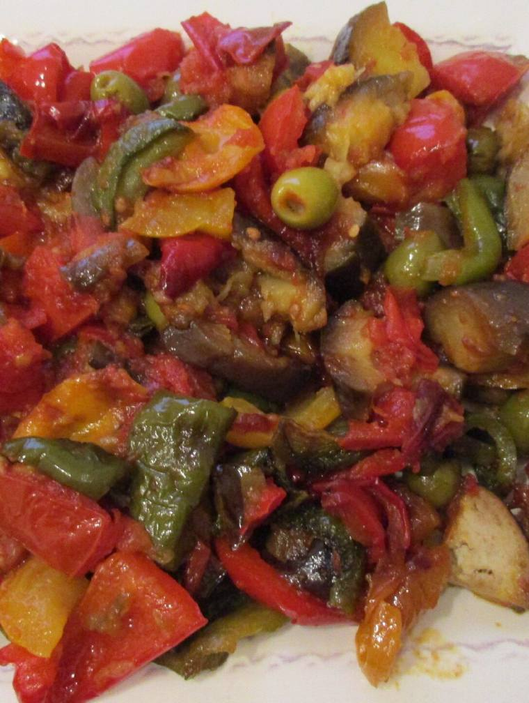

Cuisine française

Cuisine française
Ratatouille
Préparation : 20 min
Cuisson : 45 min
Ingrédients (pour 4 personnes)
- 1 oignon
- 2 gousses d’ail
- 1 poivron rouge
- 1 aubergine
- 3 petites courgettes
- 5 tomates
- 4 cuillères à soupe d’huile d’olive
- 2 brins de thym
- 1 brin de romarin
- 1 pincée de sucre
- sel, poivre
Quantités adaptées. Les temps de cuisson ne sont pas recalculés.
- Faire blondir oignon, ail, thym et romarin dans l’huile.
- Ajouter poivron, aubergine et courgettes en dés, saler, poivrer, couvrir et mijoter 15 minutes.
- Ébouillanter, peler et couper les tomates, les ajouter avec le sucre.
- Couvrir et mijoter encore 30 minutes. Servir chaud ou froid.
D’après Que Choisir. Texte reformulé.